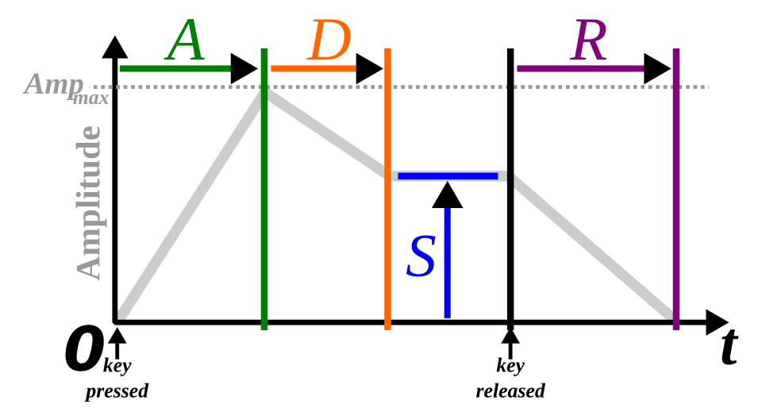

The Konami Software Envelope
For MSX developers, the AY-3-8910 (PSG) hardware envelope had limitations — global across channels and restricted to a few repeating shapes. Konami’s legendary sound team bypassed these limitations by shifting envelope logic into the VDP interrupts, creating a per-channel, software-defined ADSR profile.
The "Konami Sound" uses the 60Hz NTSC (50Hz on PAL) interrupt cycle. Instead of relying on the PSG's internal envelope generator, the driver manually updates the Volume Registers (Registers 8, 9, and 10) every time the VDP triggers an interrupt. By updating the volume every 16.6ms, Konami could simulate a sophisticated ADSR curve that gave their music a distinct percussive texture.
ADSR
ADSR stands for “Attack, Decay, Sustain, Release”, is the most common type of envelope generator used by synthesizers. The basic idea is to mimic the volume progression that occurs when you press a real-life piano key.

For most of the Konami games, the phases of a typical "piano" sound consist of:
- Attack: this is instantaneous, meaning the volume immediately shoots up to the maximum value.
- Decay: the volume is then reduced by one level every interrupt cycle, or each "tick". On NTSC machines that is 1/60th of a second (~16.67ms). On PAL, that is 1/50th of a second (20ms).
- Sustain: once the volume reaches a predetermined value, the volume is left unchanged until the next phase.
- Release: shortly before the end of the note, the volume is again reduced at a rate of one level per tick.
The exact amount of time taken by each phase could vary depending on the game.
The graph below illustrates a typical envelope pattern in notes from the game Knightmare. Press play to hear an A4 note using that envelope.
function* konamiEnvelope(volume, decayRate, sustainVolume, totalDurationTicks, noteOnDurationTicks) {
for (ticks = 0; ticks < totalDurationTicks; ticks++) {
yield Math.round(volume);
if (volume > 0 && (volume > sustainVolume || ticks >= noteOnDurationTicks)) {
volume -= decayRate;
}
}
}
Demo
Below you can see the difference in sound when using the Konami envelope. This is the Knightmare intro song. Select the envelope pattern and press play.See the source code at: https://github.com/mrbubble/music